Multi-level Edge Features Guided Network for Image DenoisingFaming Fang1 Juncheng Li1* Yiting Yuan1 Tieyong Zeng2 Guixu Zhang11 East China Normal University 2 The Chinese University of Hong KongAuthor names alphabetically, *First contributor Contact us: cvjunchengli@gmail.con This achievement was completed during the visit of the Chinese University of Hong Kong |
Abstract
Image denoising is a challenging inverse problem due to the complex scenes and information loss. Recently, various methods have been considered to solve this problem by building a well-designed convolutional neural network (CNN) or introducing some hand-designed image priors. Different from previous works, we investigate a new framework for image denoising, which integrates edge detection, edge guidance, and image denoising into an end-to-end CNN model. To achieve this goal, we propose a Multi-level Edge Features Guided Network (MLEFGN). Firstly, we build an edge reconstruction network (Edge-Net) to directly predict clear edges from the noisy image. Then, the Edge-Net is embedded as part of the model to provide edge priors and a dual-path network is applied to extract image and edge features, respectively. Finally, we introduce a multilevel edge features guidance mechanism for image denoising. To the best of our knowledge, the Edge-Net is the first CNN model specially designed to reconstruct image edges from the noisy image, which shows good accuracy and robustness on natural images. Extensive experiments clearly illustrate that our MLEFGN achieves favorable performance against other methods and plenty of ablation studies demonstrate the effectiveness of our proposed Edge-Net and MLEFGN.
Motivation
| 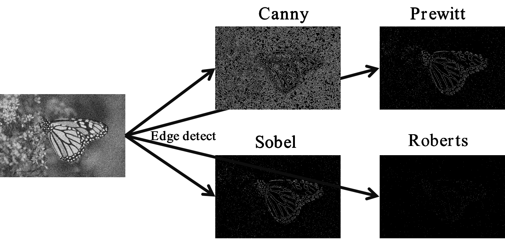 |
The most widely used method is to apply off-the-shelf edge detectors on the degraded image to obtain image edges. However, (1). Existing edge extractors are extremely sensitive to noise or other interference factors; (2). It is extremely difficult to obtain clear and accurate edges from the degraded image using off-the-shelf edge operators; (3). Inaccurate edges will interfere with the quality of the reconstructed images. Therefore, we aim to explore a CNN model that can reconstruct clear and accurate soft-edges from the noisy image directly.
| 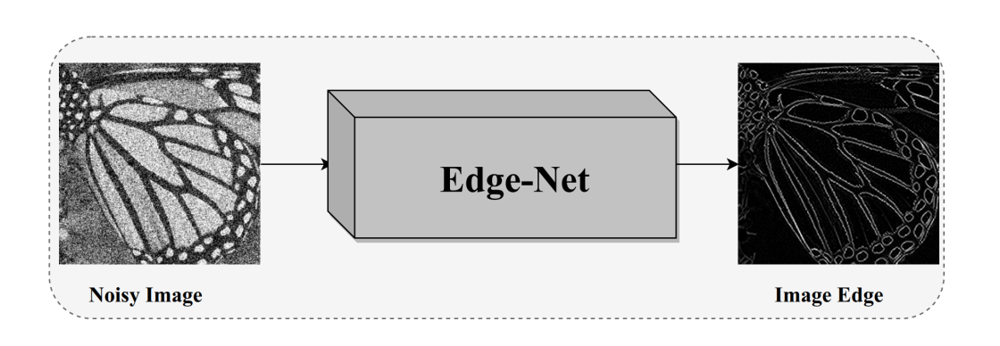 |
MLEFGN
| 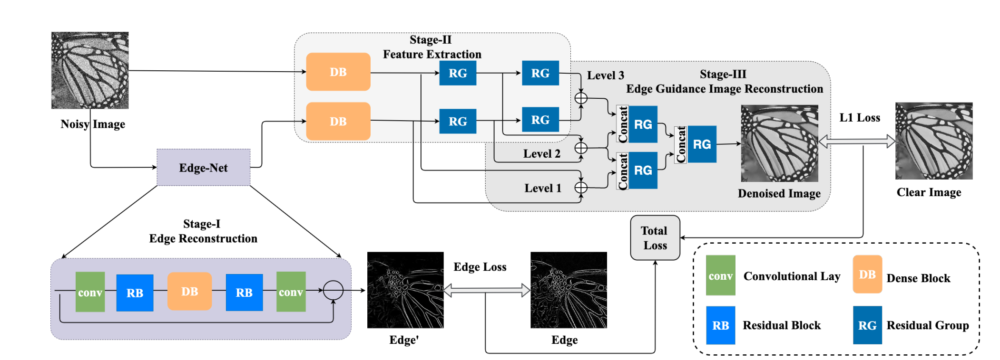 |
Visual Results
| 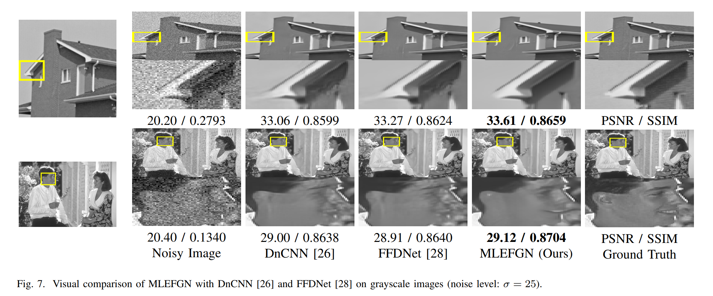 |
| 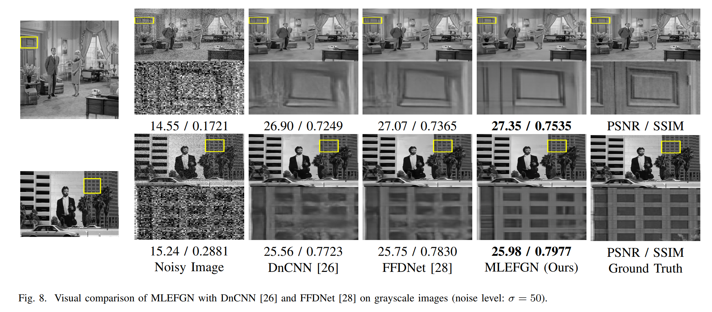 |
| 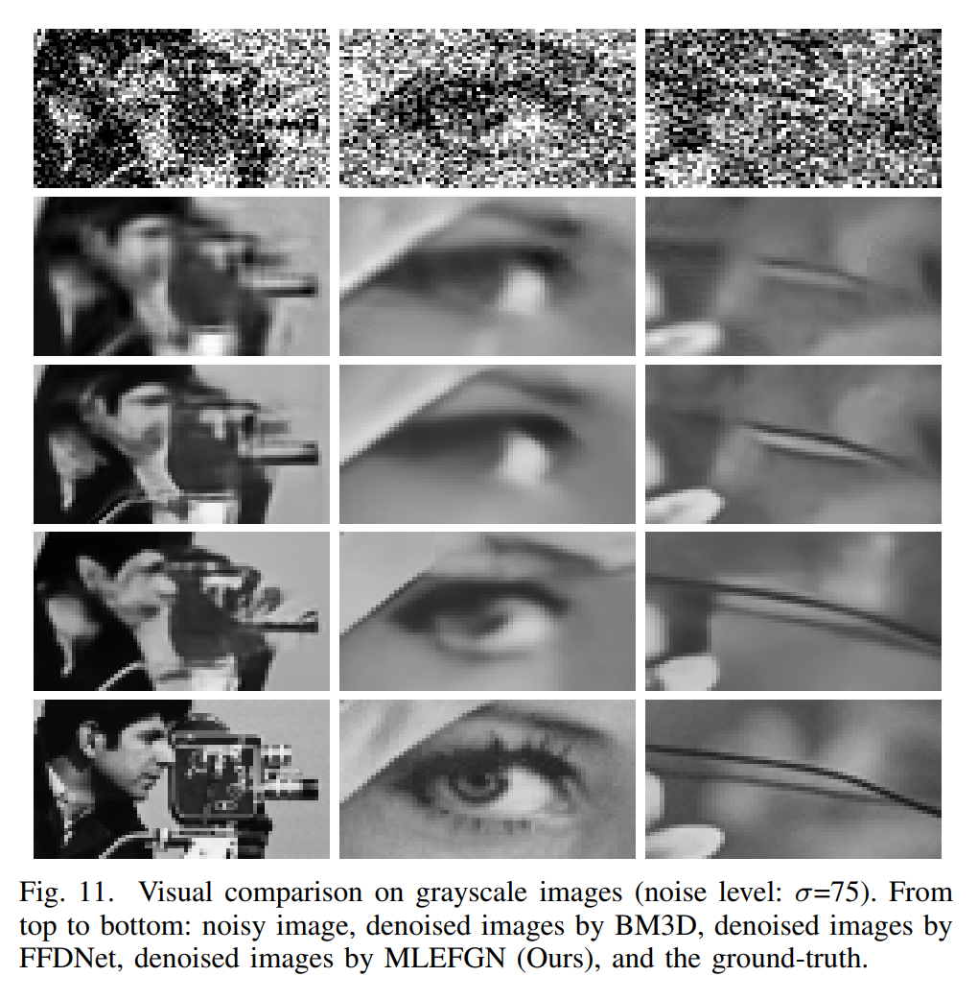 |
Reconstructed Edges
| 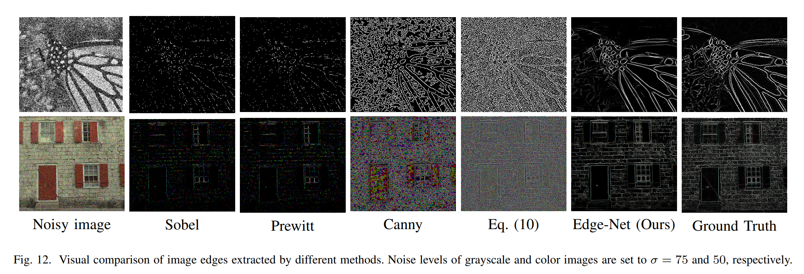 |
PSNR/SSIM Results
| 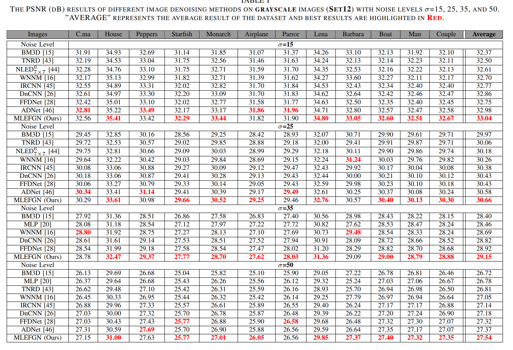 |
| 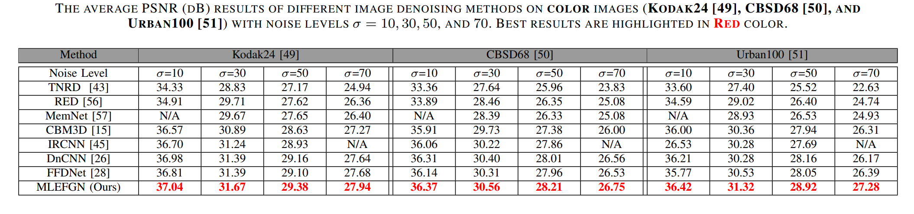 |
| 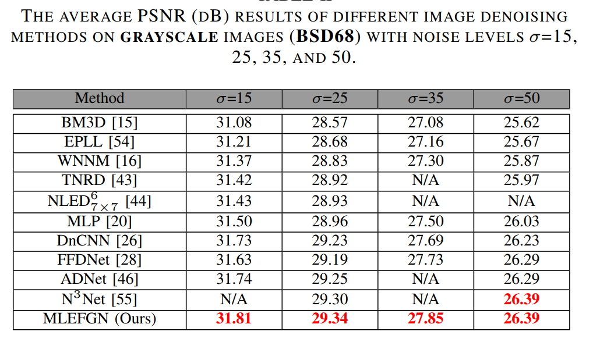 |
| 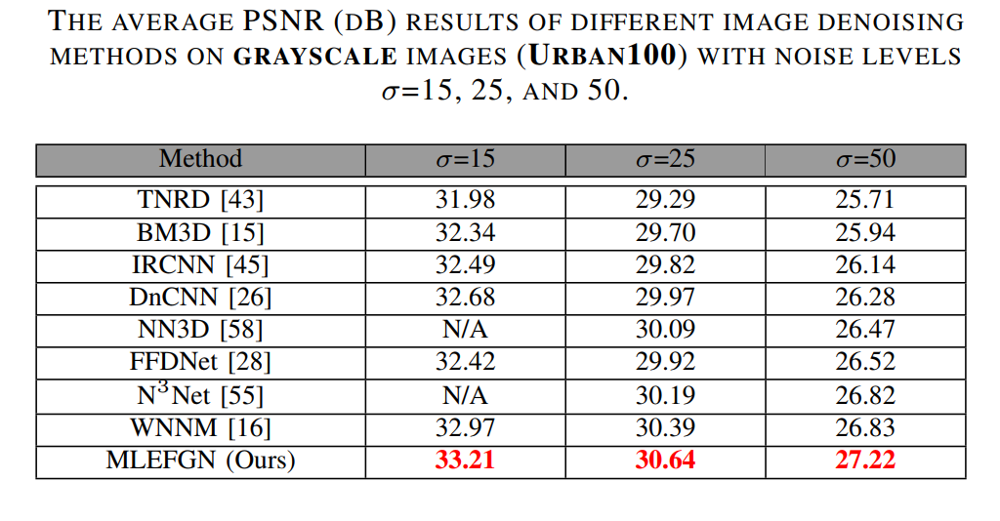 |
Downloads
| Paper | : [ TNNLS2020_MLEFGN.pdf ] |
| Experimental results | : [ MLEFGN_Denoised_Images.zip ] |
| Pre-trained model | : [ TNNLS2020_MLEFGN_premodel.zip ] |
| Source Code. | : [ Code ] |
BibTex